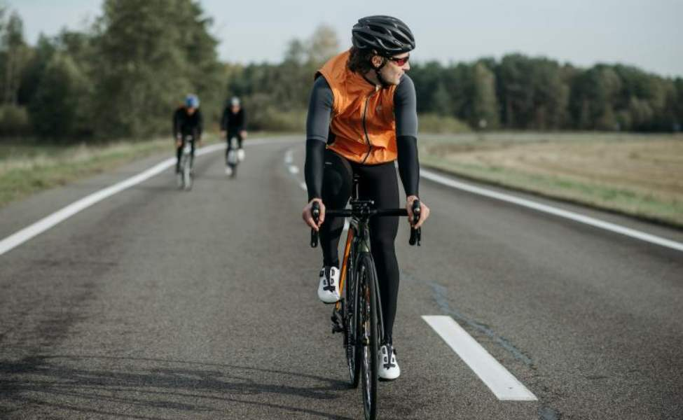
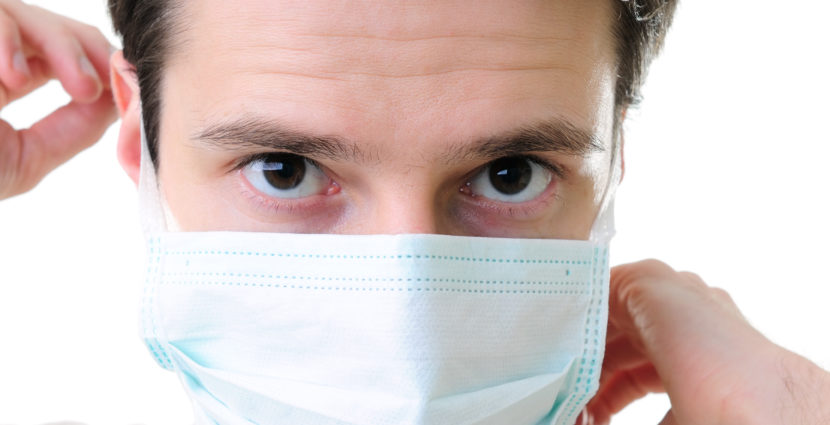
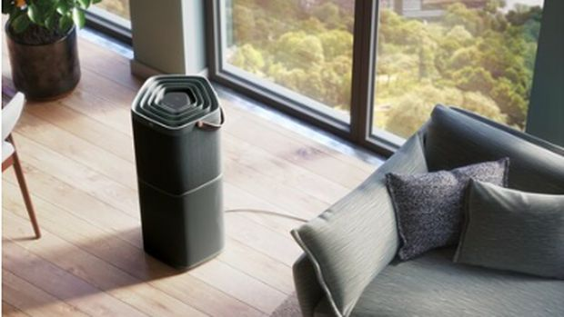

Cara Menangani Polusi Udara Di Masa Kini
Saat ini, pembangunan masif terjadi di mana-mana, kendaraan bermotor menjadi hal yang lumrah di
kalangan
umum, lahan hijau pun berkurang karena populasi manusia semakin banyak. Hal ini pun menyebabkan
polusi
udara yang kian meningkat.
Polusi udara memiliki dampak buruk terhadap kesehatan sistem pernapasan sekaligus merusak
lingkungan.
Kadar polutan yang tinggi juga bisa merusak sistem kardiovaskular.
Terdapat berbagai cara untuk menangani Udara buruk yang sedang terjadi di negeri kita saat ini
- Mengurangi Penggunaan Kendaraan Bermotor
- Menanam Pohon
- Menggunakan Masker Ketika Berada Di Luar Ruangan
- Penggunaan Air Purifier Di Dalam Rumah
Transportasi di jalanan merupakan penghasil oksida nitrogen terbesar. Nitrogen oksida merupakan
polutan
udara yang memiliki efek buruk terhadap paru-paru. Masalah polutan yang berbahaya dari kendaraan
bermotor dapat dirasakan di kota-kota besar dengan lalu lintas yang padat.

Alih-alih membawa kendaraan pribadi, kamu bisa mulai menggunakan transportasi umum. Selain itu, kamu juga bisa tidak berkendara di saat jam macet, membawa bekal agar tidak perlu keluar berkendara saat jam makan siang, menumpang kendaraan teman kamu. Hanya satu kali atau dua kali seminggu menggunakan transportasi umum, kamu sudah berkontribusi untuk mengurangi polusi dan kemacetan Hindari juga untuk menggunakan mobil dengan bahan bakar diesel, karena mobil ini mengeluarkan lebih banyak nitrogen oksida.
Menanam pohon di sekitar rumah merupakan langkah kecil yang dapat mengurangi polusi udara secara
signifikan. Berdasarkan penemuan para peneliti dari University of Southampton, pohon menyerap
850-2.000
ton partikel berbahaya dari udara perkotaan setiap tahunnya.
Selain menghilangkan partikel, pohon juga menurunkan kadar nitrogen dioksida, sulfur dioksida, karbon dioksida dan monoksida, ozon, benzena, dan dioksin. Dengan menanam pohon rumah kamu akan terasa lebih sejuk dan juga Pohon yang ditanam di rumah kamu juga mampu memperlambat udara yang tercemar agar tidak dibawa jauh oleh angin.
Pakar epidemiologi dari Universitas Griffith Australia menekankan bahwa polusi udara yang secara
berkelanjutan dihirup oleh masyarakat juga akan berdampak pada penyakit kardiovaskular (penyakit
jantung) dan kematian dini. Oleh karena itu, dia mengimbau masyarakat untuk terus memakai masker
guna
menyaring udara yg dihirup. Dengan demikian, dampak buruknya menjadi relatif berkurang.

Sebaiknya masker yang dikenakan oleh masyarakat yakni masker yang memiliki kemampuan filtrasi PM 2.5 di atas 50 persen. Sebagai informasi, Particulate Matter (PM2.5) adalah partikel udara yang berukuran lebih kecil dari atau sama dengan 2.5 mikrometer. Penggunaan masker yang benar juga sangat penting agar efektif dalam melindungi dari polusi udara. Pastikan masker menutupi hidung dan mulut dengan rapat, dan pastikan ada sedikit celah antara masker dan kulit. Setelah digunakan, jangan menyentuh bagian depan masker. Buang masker dengan benar setelah digunakan, khususnya untuk masker sekali pakai.
Air purifier merupakan alat pemurni udara yang digunakan untuk mendapatkan udara sehat di dalam rumah. Alat tersebut bekerja dengan cara menyedot udara ke dalam penyaring, kemudian disalurkan kembali menjadi udara dengan kualitas bersih.

Back